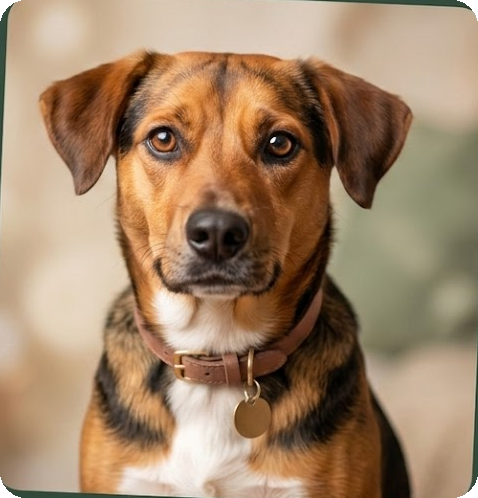

O meu4patas conecta animais que precisam de um lar a pessoas dispostas a adotar com responsabilidade. Pessoas físicas, ONGs e lares temporários, juntos por um mesmo propósito.

Explore um por um
📍 Perto de você
Veja no mapa onde estão todos os animais e encontre um amigo perto de você. Use a busca acima para refinar; centralizamos na sua cidade quando você está cadastrado.
Todos os animais
Simples assim
Busque, filtre e conheça cada animal um a um na área "Explorar pets", com foto, ficha e história.
Crie sua conta para liberar a demonstração de interesse e poder também cadastrar pets para doação.
Encontrou um amigo? Demonstre interesse e o responsável poderá entrar em contato com você.
Combine a visita, atenda aos requisitos e leve seu novo companheiro para casa.
Adoção responsável